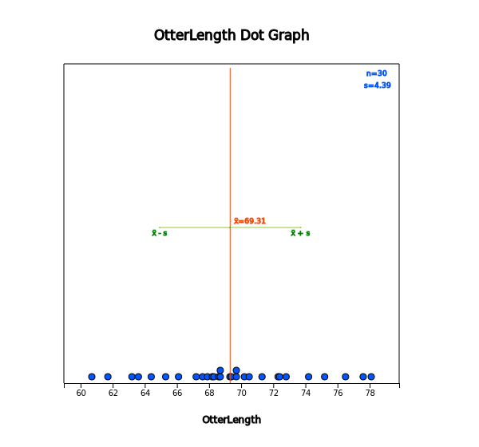
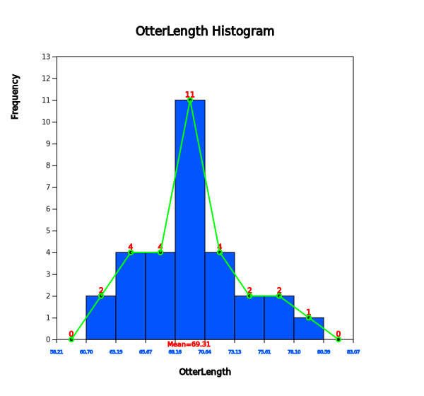
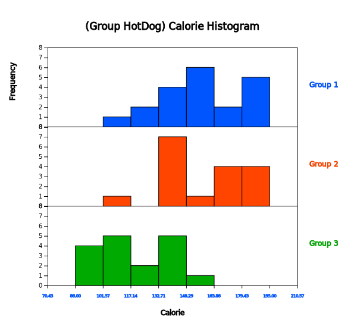
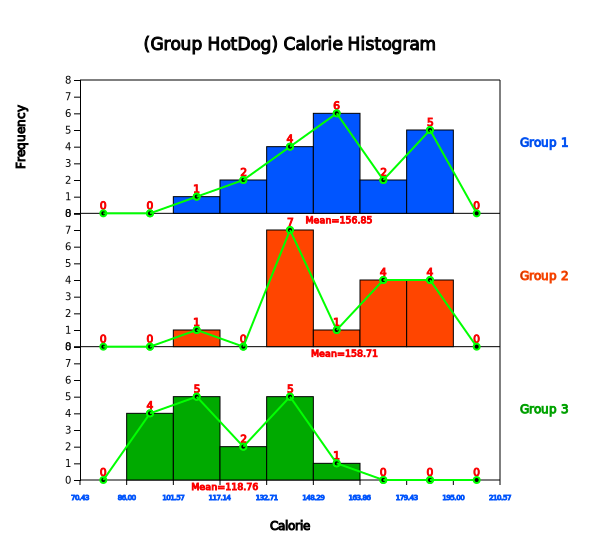
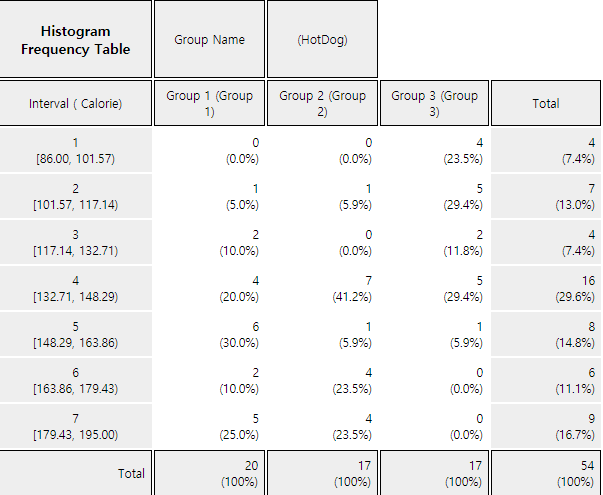
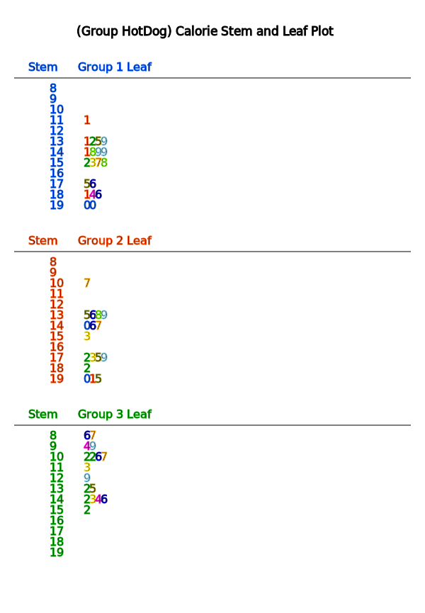
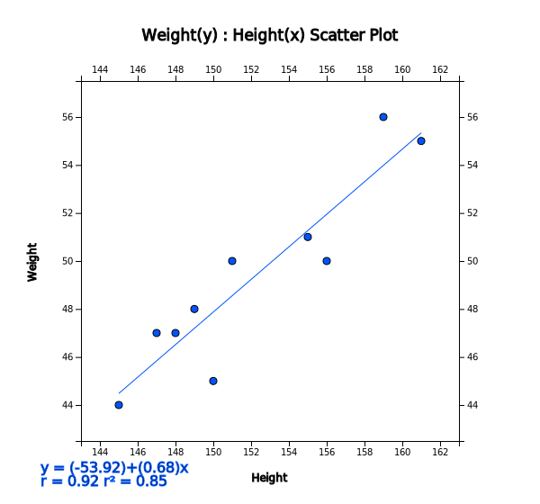

In this chapter, we introduce graphs to visualize the quantitative data such as dot graph, histogram, stem and leaf plot and scatter plot.
In Section 3.2, we discuss visualization of single quantitative variable using 『eStat』. Visualization of the quantitative data both without group and with group is discussed.
In Section 3.3, we discuss visualization of two quantitative variables using the scatter plot of 『eStat』.
Data such as height and weight whose possible values are real numbers are called quantitative data.
In order to visualize the quantitative data of a variable, dot graph, histogram, stem and leaf plot are used. In order to visualize the quantitative data of two variables, a scatter plot which utilizes two-dimensional coordinate is used.
A dot graph is used to visualize the quantitative data with smaller number of data counts. In order to draw the dot graph, we first draw the horizontal line and set its scale so that all data can be displayed on the horizontal line by considering minimum and maximum of the data, then mark each of the data values in dot corresponding to its scale. The dot graph makes it easy to see distribution patterns and anomalies of the data.
If there are too many observations of the quantitative data and therefore there are too many possible values of the data, the dot graph may not have enough space to show all data. In such cases, we divide usually all possible values of the data into several intervals and count the number of data belonging to each of intervals. Using the frequencies of each interval, we draw a histogram which is similar to the bar graph with no spacing between bars.
You might ask a question, 'How many intervals do I need to have?' There is no exact answer for the number of intervals, but 52 number of intervals is usually used when there are small number of data. A square root of the number of data is also often used as the number of intervals, but, if the number of intervals is too many, it is not easy to analyze the data sometimes. As far as the number of intervals is concerned, it depends on the analyst's judgement.
A stem and leaf plot is a variation of the histogram which is recently used to visualize the quantitative data.
The stem and leaf plot can easily tell range of observations, shape of distribution, and concentration.
The name literally shows the data in the form of stems and leaves by considering digits of data values,
the first few digits form the stems and the remaining digits form the leaves. In 『eStat』 ,
the last digit of the data values forms the leaves and the digits in front of them form the stems.
For each number of the data, first we investigate where it belongs to a stem and then write down the last digit of the number as a leaf corresponding to the stem. After investigating all numbers in the data, rearrange the values of the leaves on each stem in ascending order. The stem and leaf plot have been commonly used in recent years as both an interval-specific frequency distribution and a histogram for the quantitative data.
A Scatter plot is to visualize data of two quantitative variables using two dimensional coordinates.
The scatter plot can be considered as an extension of the dot graph for single quantitative variable.
Each pair of the data of two quantitative variables is expressed as a dot with one value on the X-axis
and the other value on the Y-axis in the XY plane. By using the scatter plot, relationship between
two quantitative variables can be observed efficiently.
In this chapter, visualization of the quantitative data is discussed by separating cases of the data
without group and with group. Visualization of the quantitative data is a basic step of statistical analysis
that will be described over the next chapters 7 to 12. It is an exploratory data analysis before
you get into some statistical analysis. Estimation and testing hypothesis for the quantitative data
of single population are described in Chapter 6 and 7. Testing hypothesis for the quantitative data
of two populations is described in Chapter 8. Testing hypothesis for the quantitative data of three
or more populations is described in Chapter 9.
Graphs for Quantitative Data
Dot graph marks each of the data values in dot on a horizontal line corresponding to its scale. The dot graph makes it easy to see distribution patterns and anomalies of the data.
Histogram divides all possible data values into several intervals, count the number of data
belonging to each interval, and draws a bar graph using these frequencies with no spacing between bars.
Stem and leaf plot is a variation of the histogram which is recently used to visualize quantitative data. The stem and leaf plot shows the data in the form of stems and leaves by considering digits of data values, the first few digits form the stems and the remaining digits form the leaves.
Scatter plot is to visualize the data of two quantitative variables using two dimensional coordinates. The scatter plot can be considered as an extension of the dot graph.
In case of the quantitative data, raw data are directly used to visualize the data. Visualization of the quantitative data is discussed by separating cases of the data without group and with group.
3.2.1 Visualization of Quantitative Data without Group
If the quantitative data are the sample data from a population, visualization of this sample data is used as a basic exploratory data analysis for estimation and testing hypothesis of population parameters such as population mean and population variance (Chapters 6 and 7).
Example 3.2.1(Otter Length – single continuous data)
The following data show lengths of 30 otters. Use 『eStat』 to draw a dot graph, a histogram, a stem and leaf plot. (unit cm)
63.2 65.3 67.6 68.7 69.7 60.7 72.4 75.2 64.4 76.5
68.3 69.3 70.2 71.3 74.2 63.6 66.1 67.9 68.7 70.5
72.3 72.8 77.6 78.1 69.7 69.4 68.6 68.2 67.2 61.7
Answer
Enter all 30 data into V1 column of the sheet in 『eStat』 system and specify the variable name of V1 as ‘OtterLength’. This data can also be found at the following location
Click on the dot graph icon
and click the variable name, 'OtterLength', then a dot graph of the otter length will be appeared
in the Graph Area as in <Figure 3.2.1>. You can also select 'OtterLength' variable at the selection box of the Analysis Variable.
<Figure 3.2.1> Dot graph of otter lengths without group
Checking the 'Mean/Std Dev' in the options window below the graph shows the average of the data and the (average) ± (one standard deviation) interval as in <Figure 3.2.2>. We can observe that large number of data can be found around the aveage and the data are distributed symmetrically around the average.

<Figure 3.2.2> Dot graph of otter lengths with MeanStdDev interval
Click on the histogram icon
to display the graph as in <Figure 3.2.3>. If you check the options of ‘Mean’, ‘Frequency’ and ‘Frequency Polygon’ below the graph, the histogram is changed as in <Figure 3.2.4>. You can also observe that there are large amount of data near the mean and the data are distributed in almost symmetrical form around the mean.
<Figure 3.2.3> Histogram of otter lengths

<Figure 3.2.4> Histogram polygon of otter lengths with mean
Click on the [Frequency Table] button
in the options window below the graph (Figure 3.2.5) to output a frequency table by intervals based on the histogram currently drawn in the Log Area as in <Figure 3.2.6>.
<Figure 3.2.5> Options of the histogram
<Figure 3.2.6> Frequency table of the histogram
The number and the width of the intervals in the histogram are automatically calculated by 『eStat』 system, but you can redraw them by specifying the ‘Interval Start’ and ‘Interval Width’ from the option below the graph and then clicking [Execute New Interval] button in <Figure 3.2.5>.
Click on the stem and leaf plot icon
to display the graph shown in <Figure 3.2.7>. This graph is a variant of the histogram where intervals are [60, 61), [61, 62), ... , [78, 79). After finding the number of data belonging to each interval, the digits of 60, 61, ... , 78 become the stem of the graph and the last digits of all data values belonging to each interval become the leaves of each stem. The leaves (last digits) of each stem are sorted in ascending order from small to large.
<Figure 3.2.7> Stem and leaf plot of otter length
Practice 3.2.1(Bicycle Road in Seoul)
The following data are the lengths of bike-only roads in Seoul's 25 administrative districts as of 2016. Use 『eStat』 to draw a dot graph, a histogram, a stem and leaf plot. Analyze the graphs.
Saved at [Ex] ⇨ eBook ⇨ PR030201_Continuous_BikeRoad.csv
Practice 3.2.2(Lengths of Major North American Rivers)
The lengths (in miles) of 141 major rivers in North America compiled by the US ecological Survey are saved at the following location of 『eStat』.
[Ex] ⇨ eBook ⇨ PR030202_Rdatasets_rivers.csv
Use 『eStat』 to draw a dot graph, a histogram, a stem and leaf plot. Analyze the graphs.
Practice 3.2.3(Annual Precipitation in US Cities)
The average amount of precipitation (rainfall) in inches for each of 70 United States (and Puerto Rico) cities are saved at the following location of 『eStat』.
[Ex] ⇨ eBook ⇨ PR030203_Rdatasets_Precip.csv
Use 『eStat』 to draw a dot graph, a histogram, a stem and leaf plot. Analyze the graphs.
3.2.2 Visualization of Quantitative Data with Group
If you can visualize the quantitative data by several groups using the same scale, it is easy to compare characteristics of groups. If the data are the sample data taken from two or more populations (groups), this comparison by visualization can be used as a basic exploratory data analysis for testing hypothesis in Chapter 8 and Chapter 9.
Example 3.2.2(Teacher’s Age by Gender)
In a middle school, the age and gender of all teachers are surveyed. The data are saved at the following location of 『eStat』.
Click on the dot graph icon
and click the variable names 'age' and 'gender' to draw the dot graph of the age by gender
as in <Figure 3.2.8>. You can select ‘Age’ from the selection box of 'Analysis Var' and ‘Gender’ from the selection box of ‘By Group’ variable.
<Figure 3.2.8> Dot graph of the age by gender: Group 1 is for male and Group 2 for female
By checking the 'Mean/StdDev’ in the options window below the graph, the mean line and (average) ± (one standard deviation) intervals are shown on the graph as in <Figure 3.2.9>.
<Figure 3.2.9> Dot graph of the age by gender with interval of mean / std dev
By looking at the dot graph in <Figure 3.2.9>, the average age of the female teachers is higher than the male teachers. If this data are sampled from two populations, a statistical analysis of testing hypothesis to compare two population means can be applied. It will be discussed in Chapter 8.
If you click on the histogram icon ,
the histogram as in <Figure 3.2.10> appears in the Graph Area. By checking the options below the graph, you can draw the mean lines, frequencies, and frequency polygons on the histogram (<Figure 3.2.11>). If you click [Frequency Table] button, the frequency table of the histogram can be displayed in the Log Area as in <Figure 3.2.12>.
『eStat』 calculates the number and the width of the intervals automatically, but you can redraw them by specifying the ‘Interval Start’ and ‘Interval Width’ in the options window below the graph.
<Figure 3.2.10> Histogram of age by gender: Group 1 is for male and Group 2 for female
<Figure 3.2.11> Histogram of age by gender with polygon
<Figure 3.2.12> Frequency table of age by gender
If you click on the stem and leaf plot icon ,
the graph as in <Figure 3.2.13> will be displayed in the Graph Area. This stem and leaf plot is a variant of the histogram in which the age data are divided into intervals as [20, 30), [30, 40), ... [60,70) by using the possible decimal digits of 10s as the stem. The age data belonging to each interval are investigated and displayed using the last digit of the age as the leaf. The last digits (leaf) of the age are sorted in ascending order from small to large.
In case of two groups, a bi-lateral stem and leaf plot as in <Figure 3.2.14> can be drawn
by clicking on the bi-lateral stem and leaf icon
.
<Figure 3.2.13> Stem and leaf plot of age by sex
<Figure 3.2.14> Both direction stem and leaf plot of age by sex
Example 3.2.3(Comparison Hotdog Calories – Three Groups)
The calorie data of the hot dogs made by three ingredients (1: beef, 2: pork, 3: chicken) are surveyed and saved at the following location of 『eStat』.
Click on the dot graph icon
and then select the variable 'Calorie' and 'Hot Dog' to draw a dot graph as in<Figure 3.2.15>. You can also select ‘Calorie’ in the 'Analysis Var' selection box and ‘HotDog’ in the 'By Group' selection box.
<Figure 3.2.15> Dot graph of calories of hot dog by type
Checking 'Mean/StdDev' in the options window below the graph will show (mean) ± (one standard deviation) intervals as shown in <Figure 3.2.16>.
If you look at the dot graph of the calories of the hot dog, the hot dogs made from chicken are lower calories than those made from beef and pork. If this data are sampled from three populations, a statistical analysis of testing hypothesis to compare several population means can be applied. It will be discussed in Chapter 9.
<Figure 3.2.16> Dot graph of calories of hot dog by type with mean interval
Click on the histogram icon
to display the graph shown in <Figure 3.2.17>. Under the options below the graph, you can draw means, frequency, and frequency polygon as in <Figure 3.2.18> and frequency table as in <Figure 3.2.19> in the Log Area.

<Figure 3.2.17> Histogram of calories of hot dog by type

<Figure 3.2.18> Histogram of calories of hot dog by type

<Figure 3.2.19> Frequency table of the histogram
The histogram of 『eStat』 calculates the number of intervals and the width of the intervals automatically, but you can redraw them by specifying the 'Interval Start' and 'Interval Width.
Click on the stem and leaf plot icon
to display the graph shown in <Figure 3.2.20> This graph is a variant of the histogram which the calories are divided into intervals [80, 90), [90, 100), ... , [190, 200) as the stem in each group. The data belonging to each interval are investigated and displayed as the leaves with the last digits of the data values. The leaves in each interval are sorted in ascending order from small to large. In case of many groups, the stem and leaf plot may overflow the screen as shown in <Figure 3.2.20> (only two groups are visible here). You can move the scroll bar of the screen to watch all the stem and leaf plot.

<Figure 3.2.20> Stem and leaf plot of hot dot calories.
Move scroll bar to see all graph
Practice 3.2.4(Oral Cleanliness by Brushing Methods)
Oral cleanliness scores according to the brushing method (1:basic method, 2: rotation method) are examined and stored at the following location of 『eStat』.
Using 『eStat』 , draw a dot graph, a histogram, a stem and leaf plot of the oral cleanliness by the brushing method.
Practice 3.2.5(Plant Growth by Condition)
Results from an experiment to compare yields (as measured by dried weight of plants) are obtained under a control (leveled ‘ctrl’) and two different treatment conditions (leveled ‘trt1’ and ‘trt2’). The weights data with 30 observations on each of control and two treatments (‘crtl’, ‘trt1’, ‘trt2’) are saved at the following location of 『eStat』.
[Ex] ⇨ eBook ⇨ PR030205_Rdatasets_PlantGrowth.csv
Use 『eStat』 to draw a dot graph, a histogram, a stem and leaf plot of the weights by three groups.
Practice 3.2.6(Effectiveness of Insect Sprays)
The counts of insects in agricultural experimental units treated with six different insecticides. Data with 72 observations on 2 variables, insect count and sprays (A, B, C, D, E, F), are saved at the following location of 『eStat』. (Source: Beall, G., (1942) The Transformation of data from entomological field experiments, Biometrika, 29, 243–262.)
In general, we investigate several characteristics from one subject or one observation. For example, when we investigate students in an elementary school, we examine their gender, height and weight simultaneously which are one categorical and two quantitative variables.
If you have data on two quantitative variables, a scatter plot can be used to analyze the data. A scatter plot displays the data on a two-dimensional plane with values for one variable being X-axis and values for the other being Y-axis. If a categorical variable such as gender is also collected together, a scatter plot by differenciating the colors of the dots by gender can be drawn.
If data are sampled from a population, the scatter plot can be used to analyze correlation and regression which will be discussed in Chapter 12.
Example 3.3.1(Height and Weight by Gender)
Data on gender, height and weight of 10 elementary school students are saved at the following location of 『eStat』.
By clicking on the scatter plot icon
and clicking on the 'weight' and 'height’ variable names, a scatter plot with the weight on Y-axis (the first selected variable) and the height on X-axis (the second selected variable) will appear in the Graph Area as in <Figure 3.3.1>.
You can also select 'weight' in the 'Y-variable' selection box and 'height in the 'by X-variable' selection box.
<Figure 3.3.1> Scatter plot of height and weight
By checking the 'Regression' in the options window below the graph shows a scatter plot with a regression line as in <Figure 3.3.2> which indicates a relationship between weight and height. If you look at the scatter plot, you can see that the larger the height, the heavier the weight is. See Chapter 12 for more discussion on the regression analysis.

<Figure 3.3.2> Scatter plot of height and weight with a regression line
In order to draw a scatter plot by gender, select 'Gender' in the 'Group' box of options. It shows a scatter plot with different colors of gender as in <Figure 3.3.3>. By checking the 'Regression' in the options will show the regression lines to each gender as in <Figure 3.3.4>.
<Figure 3.3.3> Scatter plot of height and weight by gender groups
<Figure 3.3.4> Scatter plot of height and weight by gender with regression lines
If you select the height as a 'Size Var' in the option, the dots in the scatter plot are proportional to the height as in <Figure 3.3.5>.
<Figure 3.3.5> Scatter plot of height and weight by gender with size variable of height
Practice 3.3.1(Old Faithful Geiser)
Waiting time between eruptions and the duration of the eruption for the Old Faithful geyser in Yellowstone National Park, Wyoming, USA were collected. There are 272 observations on 2 variables, time between eruptions (in seconds) and waiting time to next eruption (in mins). The data are saved at the following location of 『eStat』.
Draw a scatter plot of the time between eruptions and the waiting time to next eruption.
Practice 3.3.2(Age and Income by Gender)
A survey of age, monthly income and gender (1: man, 2: woman) was conducted and the data are saved at the following location of 『eStat』.
[Ex] ⇨ eBook ⇨ PR030302_Continuous_IncomeAge.csv.
Draw a scatter plot of the age and the monthly income by gender.
Practice 3.3.3(Motor Trend Car Road Tests)
The data of 32 observations were extracted from the 1974 Motor Trend US magazine, and comprises fuel consumption and 10 aspects of automobile design and performance for 32 automobiles. The data have 11 variables as follows.
V1
mpg
Miles/(US) per gallon
V2
cyl
Number of cylinders
V3
disp
Displacement (cu.in.)
V4
hp
Gross horsepower
V5
drat
Rear axle ratio
V6
wt
Weight (1000 lbs)
V7
qsec
1/4 mile time
V8
vs
Engine (0 = V-shaped, 1 = straight)
V9
am
Transmission (0 = automatic, 1 = manual)
V10
gear
Number of forward gears
V11
carb
Number of carburetors
(Source: Henderson and Velleman (1981), Building multiple regression models interactively. Biometrics, 37, 391–411.)
This data are saved at the following location of 『eStat』.
[Ex] ⇨ eBook ⇨ PR030303_Rdatasets_Mtcars.csv
Draw a scatter plot of the miles per gallon and the weight of a car by the number of cylinders.